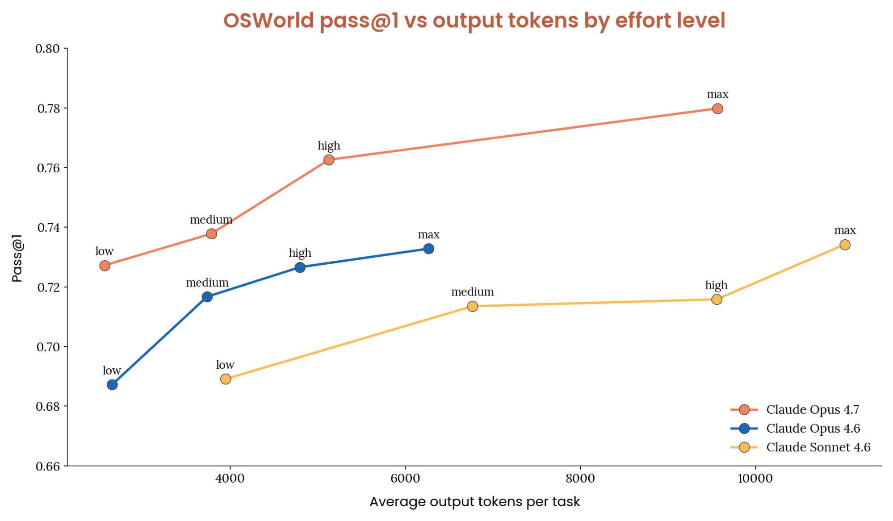
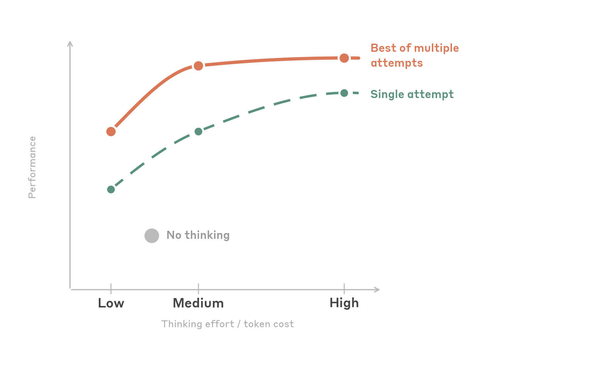

Anthropic이 2026년 5월 23일, Claude 모델 패밀리로 컴퓨터 및 브라우저 자동화를 구축하는 개발자를 위한 종합 모범 사례 가이드를 발표했습니다. 단순한 팁 모음이 아니라, 해상도 세팅부터 보안·컨텍스트 관리까지 실전에서 부딪히는 문제들을 체계적으로 풀어낸 문서입니다.
이 글에서는 원문의 핵심을 인터뷰 Q&A 형태로 재구성해봤습니다.
Q: 클릭 정확도를 높이는 가장 중요한 한 가지는?
A: 스크린샷을 API로 보내기 전에 미리 다운스케일하는 것입니다. 생각보다 이게 임팩트가 큽니다.
Claude Computer Use API는 내부적으로 이미지 크기 처리 한계를 가집니다. Claude 4.6 패밀리는 긴 엣지 최대 1,568px·1.15MP, Opus 4.7은 2,576px·3.75MP까지 수용합니다. 이 한계를 초과해 보내면 API가 알아서 다운스케일하는데, 그 과정을 개발자가 제어하지 못하면 좌표가 어긋납니다.
그래서 1280×720을 기본값으로 추천합니다. 픽셀 예산의 약 80%만 사용해서 안전 마진을 확보할 수 있고, Opus 4.7을 쓸 때는 1080p까지 올려도 의미 있는 품질 향상이 있습니다.
한 가지 더. 메시지 배열에서 텍스트 지시를 이미지 앞에 배치하세요. 모델이 스크린샷을 처리하면서 “무엇을 찾아야 하는지” 미리 알 수 있어서 클릭 정확도가 올라갑니다.
Q: 모델마다 클릭 성능이 다른가요?
A: 꽤 다릅니다. 용도에 따라 선택하면 됩니다.
- Sonnet 4.6 — 기계적 클릭 정밀도가 가장 뛰어납니다. 공간 정확도가 높고, 다운스케일이 심한 상황에서도 강건합니다.
- Opus 4.6 — 클릭보다는 추론 능력이 강점입니다.
- Opus 4.7 — Sonnet 4.6급 클릭 정밀도에 높은 해상도 예산, 그리고 Opus급 추론력을 결합했습니다.
- Haiku 4.5 — 레이턴시가 최우선일 때 선택합니다.
실전 권장: 대부분의 작업에는 Sonnet 4.6이 클릭·추론·비용의 최적 균형점입니다. 강한 추론이 필요한 복잡한 워크플로우에는 Opus 4.7을 선택하세요.
작은 버튼이나 밀집된 UI에서는 enable_zoom: True를 설정하거나, 아예 키보드 단축키·탭 내비게이션으로 대체하는 편이 신뢰도 높습니다.
Q: Thinking effort는 어떻게 설정해야 하나요?
A: 모델에 따라 다릅니다. 핵심만 정리하면:

Opus 4.7은 high가 기본값입니다. OSWorld 벤치마크에서 Opus 4.7은 4.6 패밀리 전체를 동등한 토큰 사용량에서 능가했는데, 특히 low 노력 설정에서조차 Sonnet 4.6의 max와 비슷한 성능을 내면서 토큰은 약 1/10만 소모합니다. 비용에 민감하다면 low도 강력한 선택지입니다.

4.6 패밀리는 medium이 스위트 스팟입니다. high와 비슷한 성공률을 내면서 토큰은 절반만 씁니다. 재시도를 포함하면 medium과 high는 같은 성능으로 수렴합니다. 놀랍게도 low도 사고를 아예 끄는 것보다 토큰을 적게 쓰면서 정확도는 같거나 더 높습니다. 오류가 줄어 재시도 사이클이 감소하기 때문입니다.
주의할 점: max는 비추천입니다. UI 작업은 주로 지각적·기계적이라서, 깊은 논리 사고를 늘리는 것보다 올바른 요소를 식별하고 클릭하는 게 핵심입니다. 테스트에서 max는 high 대비 정확도 향상 없이 토큰만 더 먹었습니다.
Q: 프롬프트 인젝션 공격은 어떻게 방어하나요?
A: 공식 computer_20251124 도구를 쓰면 분류기가 자동으로 켜집니다. 추가 설정·레이턴시·비용 없이요.
컴퓨터 사용 에이전트는 본질적으로 신뢰할 수 없는 콘텐츠와 상호작용합니다. 웹페이지의 숨겨진 텍스트, 조작된 이미지, 기만적 UI 요소 등이 에이전트 동작을 탈취하려 할 수 있습니다.
Anthropic의 방어는 다층 구조입니다:
- 훈련 시 강건성 — 강화학습으로 프롬프트 인젝션 저항성을 모델 자체에 내장
- 실시간 분류기 — 컨텍스트 창에 들어오는 콘텐츠를 스캔해 잠재적 공격을 플래그
- 지속적 레드팀 — 보안 연구자가 방어를 지속 점검
분류기 외에도 권장하는 추가 조치가 있습니다. 고위험 작업(폼 제출, 구매, 메시지 전송 등)에는 반드시 Human-in-the-Loop을 구현하고, 에이전트 권한 범위를 최소화하며, 모든 행동을 로깅하세요.
Q: 스크린샷이 컨텍스트 창을 빠르게 채우는데, 어떻게 관리하나요?
A: 이게 사실 장기 실행 에이전트에서 가장 큰 과제입니다. 해상도에 따라 스크린샷 하나당 약 1,000~1,800 토큰을 소모합니다. 200k 컨텍스트 창이 100개 미만의 스크린샷으로 꽉 찹니다.
Anthropic이 권장하는 세 가지 전략을 조합해서 쓰라고 합니다.
캐시 브레이크포인트 배치
API는 최대 4개의 캐시 브레이크포인트를 지원합니다. 1개는 안정적인 접두사(시스템 프롬프트, 도구 정의)에, 나머지 3개는 최근 이력에 배치하세요. 최근 이력이 무효화 리스크가 가장 높고, 캐시 절감 효과가 복리로 쌓이기 때문입니다.
롤링 버퍼
오래된 스크린샷을 최근 N개만 유지하고 나머지는 "[Image omitted]" 플레이스홀더로 교체합니다. 핵심은 배치로 정리하는 것 — 하나씩 지우면 캐시가 계속 깨집니다. 기본값으로 keep_n=3, interval=25에서 시작해보세요.
LLM 컴팩션
이미지를 조용히 지우는 대신, 전체 대화를 요약한 뒤 삭제합니다. 요약에는 사용자 원래 지시, 완료한 행동, 실패한 접근법(재시도 방지용), 현재 상태, 다음 단계 등을 포함해야 합니다.
서버 사이드 컴팩션(베타)도 제공됩니다. compact-2026-01-12 베타를 활성화하면 API가 자동으로 컴팩션을 수행하고, 임계값과 요약 프롬프트를 커스텀할 수도 있습니다.
Q: Teach Mode가 뭔가요?
A: 텍스트로 설명하는 대신 직접 보여주는 방식입니다. 사용자가 작업을 수행하는 걸 녹화하면(스크린샷, 행동, 음성 내레이션), Claude가 그 데모를 참고해서 같은 워크플로우를 실행합니다.
중요한 점은 엄격한 리플레이가 아니라는 것입니다. Claude는 데모를 가이드로 사용하면서 실시간 환경에 맞게 추론합니다. 버튼 위치가 바뀌었거나 메뉴가 재구성됐어도, 현재 UI에서 동등한 요소를 찾아냅니다.
세 가지 플레이백 모드가 있습니다:
- Strict — 단계를 정확히 따르고, UI가 크게 변경되면 중지. 컴플라이언스 민감 워크플로우에 적합.
- Adaptive — 데모를 가이드로 쓰되 UI 변경에 적응. 대부분의 기본값.
- Goal-oriented — 최종 결과에 집중하고 단계는 힌트로만 활용. UI가 자주 변하지만 목표가 같을 때 유용.
Q: 실험적 기능도 소개해주세요
A: 두 가지가 있습니다.
배치 도구(computer_batch / browser_batch) — 여러 하위 행동을 하나의 도구 호출로 실행합니다. N번의 라운드 트립을 단 한 번으로 줄여줍니다. 서로 독립적인 행동(폼 필드 여러 개 작성, 키보드 단축키 체인 등)에 적합하고, 탐색이나 오류 복구 같은 순차적 시퀀스에는 비추천합니다.
어드바이저 도구(베타) — 실행자 모델(예: Sonnet 4.6)과 고지능 어드바이저(예: Opus 4.7)를 페어링합니다. 실행자가 깊은 추론이 필요한 순간에 어드바이저를 호출해 계획이나 수정을 받고 계속 진행합니다. 비용 효율적으로 Opus급 판단을 활용하는 방식입니다.
한 줄 요약
해상도는 1280×720 기본, 모델은 Sonnet 4.6이 달인 클릭·Opus 4.7이 고수 추론, thinking은 4.6은 medium·4.7은 high, 공식 도구 쓰면 인젝션 분류기 자동 켜짐, 컨텍스트는 캐시+롤링 버퍼+컴팩션 삼위일체로 관리. 이것만 기억하시면 됩니다.
원문: Best practices for computer and browser use with Claude — Lucas Gonzalez, Luca Weihs (Anthropic), 2026-05-23